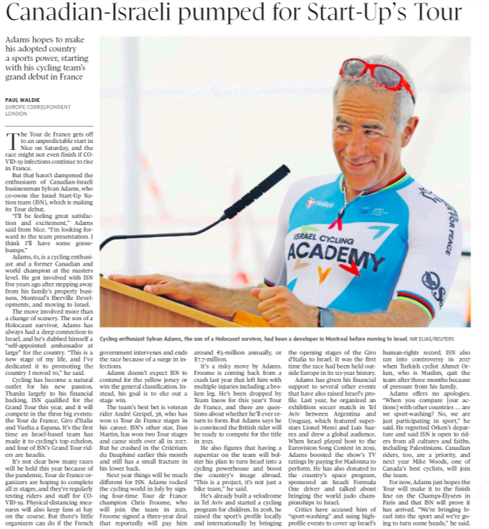

In an otherwise positive report which profiled Sylvan Adams, a successful businessman formerly from Montreal and now a prominent philanthropist who lives in Israel about his co-ownership of the Israel Start-Up Nation cycling team, for some reason, Globe and Mail reporter Paul Waldie dragged in a gratuitous accusation that Adams’ engaged in “sport-washing”.
Waldie’s August 28 article said the following:
Critics have accused him of “sport-washing” and using high-profile events to cover up Israel’s human-rights record. ISN also ran into controversy in 2017 when Turkish cyclist Ahmet Orken, who is Muslim, quit the team after three months because of pressure from his family.
Adams offers no apologies. “When you compare [our actions] with other countries … are we sport-washing? No, we are just participating in sport,” he said. He regretted Orken’s departure and said ISN is open to riders from all cultures and faiths, including Palestinians. Canadian riders, too, are a priority, and next year Mike Woods, one of Canada’s best cyclists, will join the team.
For now, Adams just hopes the Tour will make it to the finish line on the Champs-Élysées in Paris and that ISN will prove it has arrived. “We’re bringing Israel into the sport and we’re going to turn some heads,” he said.”

The “sport-washing” allegation is similar to the canard that Israel “green-washes” or engages in “pink-washing”. In other words, that the Jewish state uses its pro-environment and pro-LGBTQ+ credentials to shield criticism of its alleged human rights abuses. In “sport-washing,” Israel’s detractors claim that its successes, whether in world Judo competitions or in cycling, is a smokescreen for alleged human rights violations. Of course, Israel has a sterling human rights record, of which, it has no need to apologize for, but to be proud of.
This begs the question: why is Israel being singled out for these various “washing” allegations? You never hear about Iran, Syria, and North Korea engaging in “pink-washing”, “green-washing,” or “sport-washing”.
It’s regrettable that reporter Paul Waldie felt the need to drag this allegation into an otherwise fair, positive and accurate report about Mr. Adams and the Start-Up Nation cycling team.
For some critics of Israel, the Jewish state is always wrong, even when it’s doing the right thing and when its actions are innocuous and politically neutral. For these die-hard critics of Israel, their failure to give the Jewish state credit for being successful and for doing the right thing, reveals that the only bigotry they are distracting from is their own, as they hold Israel to a standard that they demand of no one else.